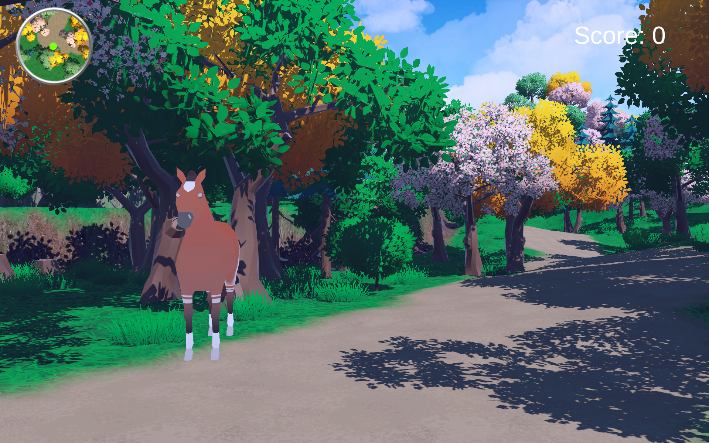
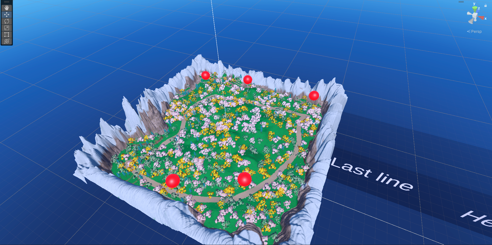
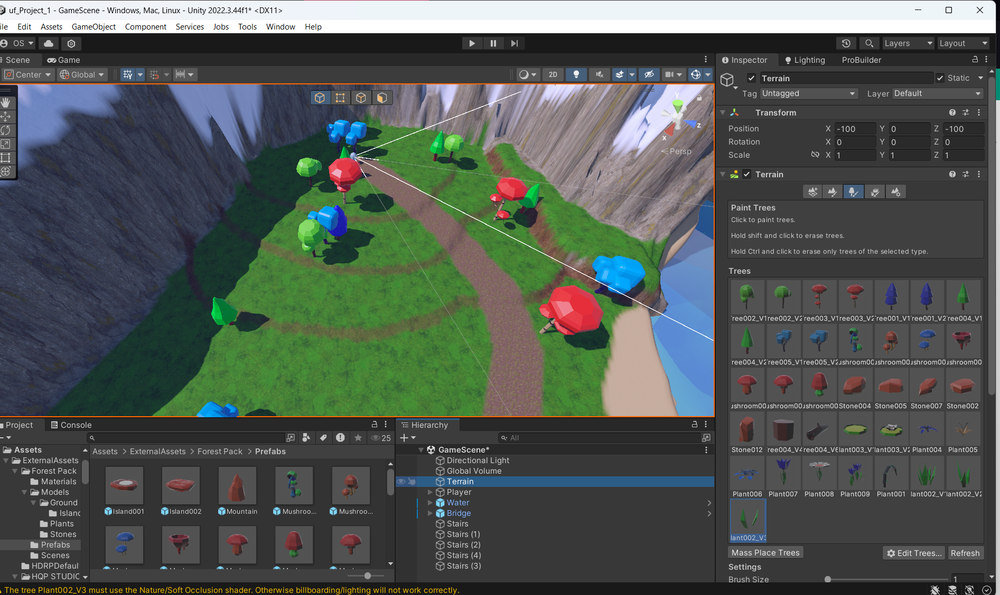
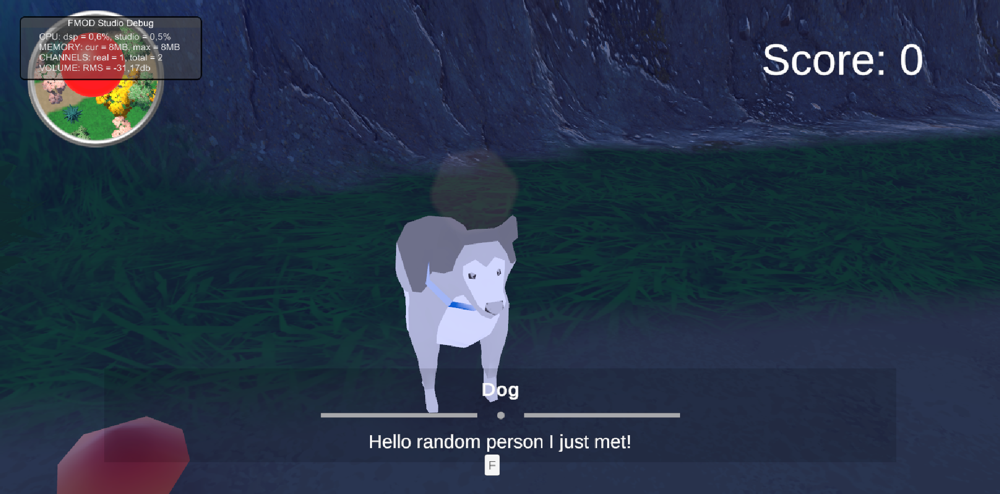

Video Game
A Walk Through The Woods
A game about helping a horse find his lost friends for his party. Will you help him, or quell your hunger instead?

About the Project
A Walk Through the Woods was my Unity fundamentals course project during the first year of my studies.
The idea of the project was to create a "walking simulator" where the player moves around the level and has some simple interactive moments with the characters.
I wanted to make a game with a lively atmosphere and a really "happy-go-lucky" vibe, where the actual story stands in contrast with its surroundings.
At the same time, I wanted the story to remain narratively sound. Therefore, a lot of bright colours and lighting were used to create a carefree and happy atmosphere.
My Contribution
Terrain and level design
Story and narrative
Minimap / UI
Models and assets were sourced externally.
Project Details
Role
Game Designer
Engine
Unity
Team Size
1 person (myself)
School Project
This was my introductory Unity course.
Development Process
Below are some screenshots of the project in the editor with explanations.
The level of this game was fairly easy to create. I got to work on creating a natural environment with lots of uneven terrain.
I had to create a natural path that the player could follow, where they would meet and interact with the animals.
Below are some screenshots of the level within the editor, showing its different iterations throughout the development process.



Since the player could interact with the characters, I also had to make them distinguishable from one another. Therefore, we gave each character different dialogue.
This was done based on the stereotypes associated with each animal. For example, the dog would be happier to see the human player than the cat would be.

I wanted to try making a game where the player's choices would impact the ending.
Therefore, this game has two different choices that, depending on the overall outcome, will result in a different ending.
I like how this turned out because, even though the story is simple, it adds another layer of complexity and interactivity to the game.
Loading dialogue script...Final Result
In the end, this project really helped me understand the basics of Unity, which I still benefit from to this day.
While simple, I believe this project was a great way for me to learn about and experiment with systems such as Yarn Spinner, the Unity Terrain Tools, and the basics of scripting.